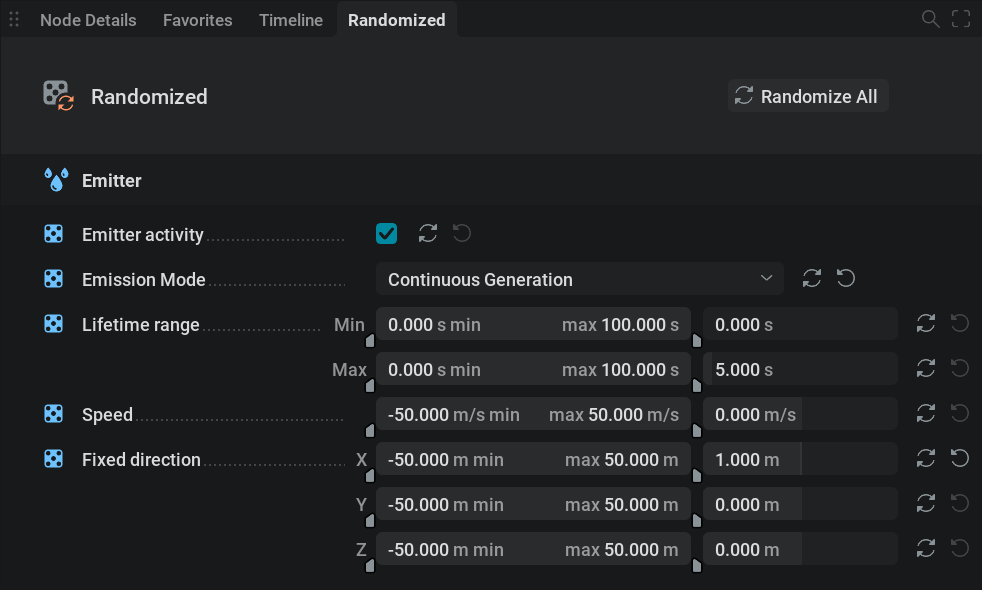
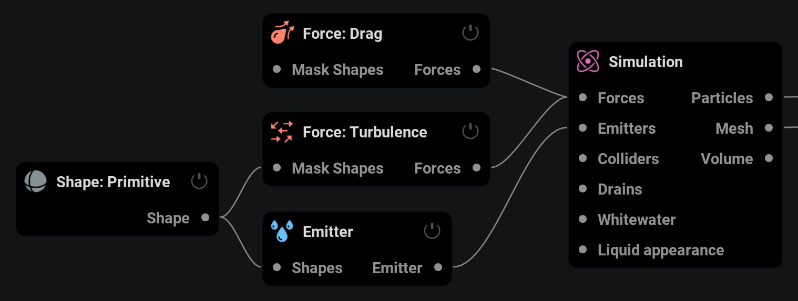
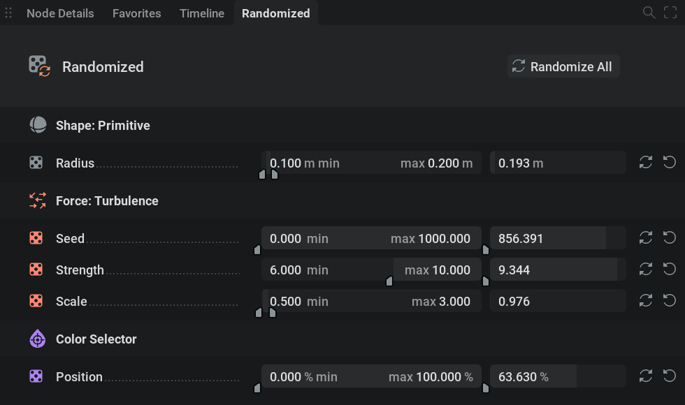
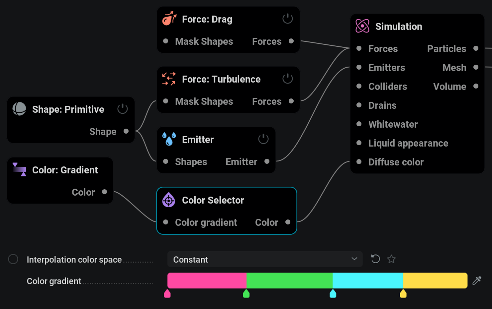
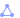
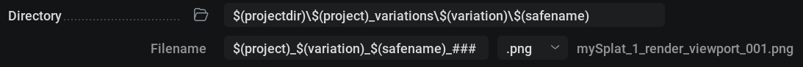
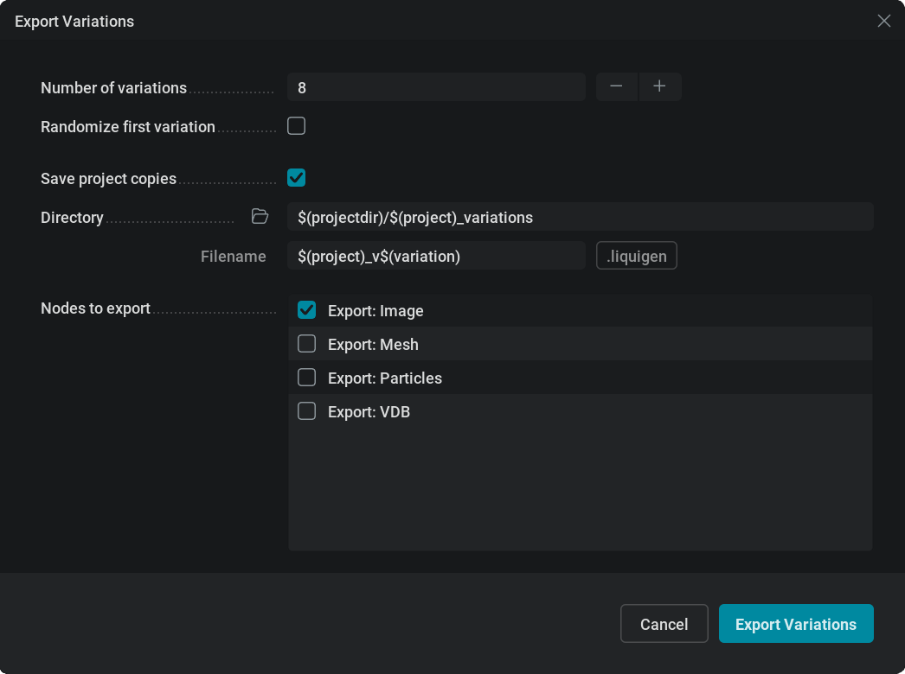

Randomization#
In this section, you will learn how to automatically create and export variations of your projects! This feature is also known as “wedging”. This is useful, for example, if you have a project that needs lots of similar elements, if you want to have some options to show your supervisor, or if you wish to get that perfect random seed for your hero element.
Setting up randomization#
You can randomize a parameter by setting the override to Randomize Override. This is done by Shift +  clicking the
clicking the  circle next to it. A randomized parameter is indicated with the
circle next to it. A randomized parameter is indicated with the  icon. To disable the Randomize Override,
icon. To disable the Randomize Override,  click the
click the  icon to set it back to
icon to set it back to  No Override.
No Override.
Once you’ve selected your parameters for randomization, you can manage them in the Randomized tab.
You can remove a parameter from the randomized tab by  clicking the
clicking the  icon next to it.
icon next to it.
The Randomized tab contains mostly range sliders with the regular parameter slider right next to it.
With the range slider, you can specify the minimum and maximum value between which the random value can be picked.
With the regular parameter slider right next to it, you can see and edit the current parameter value. This value will be overwritten by a random one from within the specified range when the parameter is randomized.
A parameter is randomized by clicking the  icon next to it.
icon next to it.
To randomize all parameters you can click the blue Randomize All button or the  icon in the top right corner of the UI.
icon in the top right corner of the UI.
Example:

With this setup, you can set the Radius with the right slider but when the parameter is randomized its value will be overwritten by a random value between 1 and 3 as specified by the range slider.
{kind=link}

Different parameter types are set up a bit differently in the Randomized tab. Let’s look at them in order of the image on the right:
Checkboxes in the randomized tab have a random chance of being turned on or off when randomized.
Dropdown menus are assigned a random menu item upon randomization.
Range sliders are split up into two range sliders, one for the minimum value and one for the maximum value. For example, you can give particles a different maximum age between 1 and 5 seconds for every variation by setting the Lifetime limits Max component to have a minimum of 1 and a maximum of 5.
Value parameters, which are the most common ones, are represented by one range slider.
3-vector parameters are split up into three range sliders each representing an axis. This means that you can define the amount of randomization for each axis. For example, if you want to randomize the Z axis only you can set the other two to a fixed value by inputting the same value in the min and max fields on the range slider.
Randomized splat example:
{kind=link}

Let’s now say we want to expand our options here and see eight different splats.
Have a look at how the Randomized tab is set up now and why.
{kind=link}

The parameters that determine the attributes we want to vary for this splat are the ones added to the Randomized tab.
Radius will affect the amount of liquid as the sphere shape is the emission source. The range is set from 0.1 up to 0.2, the way these values are determined is by experimentation. Values below 0.1 made the splats too weak to look realistic and values above 0.2 made the splats too big. This means that all values in between will give variations with good results.
Seed is left at the default range since for seed parameters any different value will give a completely different pattern. A different turbulence pattern results in a completely different splat.
Strength determines the amount of force injected into the simulation at the base. Higher values result in bigger and faster splats. The max value is set at the biggest fastest splat desired and the min value at the smallest weakest good-looking splat.
{kind=link}

Scale determines the size of the noise resulting in different splat patterns. Higher values result in bigger tendrils. Again, the minimum and maximum values to give good-looking results are picked.
The Position parameter of the Color Selector node is used to pick a random color for the liquid from the connected color gradient. It can go from 0% to 100% meaning that it can pick any color from left to right on the color gradient.
{kind=link}
Exporting variations#
Exporting variations starts by setting your Export: Image,  Export: Particles,
Export: Particles,  Export: VDB node up like you normally would. But with the addition of using the
Export: VDB node up like you normally would. But with the addition of using the $(variation) variable in the Directory or the Filename field. If you don’t use this, the files will be overwritten for every variation since there is nothing unique in the directory or filename.
{kind=link}
{kind=link}
Example:
{kind=link}

Here, with mySplat being the project file name, a folder called mySplat_variations is created in the project directory (where the .liquigen file is stored).
Within that directory, numbered folders will be created for every variation.
In those folders will be subfolders for each render pass.
All files will be dynamically named based on the filename, variation number, and render pass. You can see a file name example next to the Filename field.
To export variations instead of exporting once go to File/Export Variations… in the top left corner of the user interface.
The Export Variation window will pop up.
{kind=link}

Number of variations: The number of times the simulation will run and export.
Randomize first variation: If checked, all parameters set up for randomization will be given a random value before the first variation is exported. If unchecked, the first variation will use the values you currently have.
Save project copies: If checked, project files for each variation will be stored in a specified location with a specified name. This way, you can reproduce every exported variation since otherwise, you won’t know what random values were assigned.
Nodes to export: Here, you have a list of nodes where you can check the ones you want to use for exporting your variations.
Cancel: Close the Export Variations window and don’t export.
Export Variations: Start exporting your variations!
Example:
We’re still using our mySplat project. When using the settings in the image above:
8 variations of my splat will be exported.
The first variation will be the exact simulation we currently have (maybe because we like that one)
A project copy will be saved for each variation storing their settings for later use. The project files will be stored in the project directory in a subfolder called mySplat_variations and named mySplat_v1, mySplat_v2, mySplat_v3, etc.
We just want to export from the one Export: Image node so we’re leaving that one checked and the rest unchecked.
After hitting the blue Export Variations button and seeing the magic happen we have my eight unique splats!